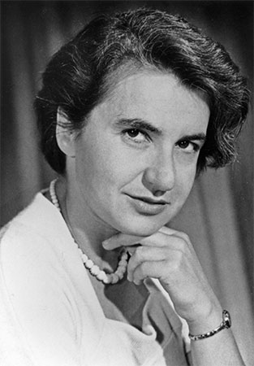

Biography

Rosalind Franklin was very intelligent from a young age and knew that she wanted to be a scientist since age 15. She went to Newnham College and studied chemistry. She was accepted as a bachelor's degree for employment. She then went on to work as an assistant research officer at the British Coal Utilisation Research Association. She studied the porosity of coal, which was the basis of her 1945 Ph.D thesis "The physical chemistry of solid organic colloids with special reference to coal." Franklin was appointed at the Laboratoire Central des Services Chimiques de I'Etat in Paris in 1946. While there, Jacques Mering taught her X-ray diffraction, which led to the discovery of the "secret of life."